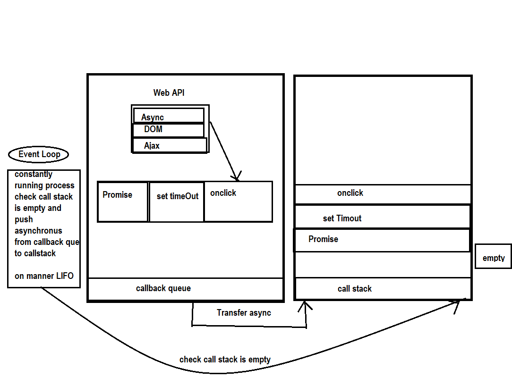

JS Interview Question
Total Qst - 100
Question 1- Difference between “ == “ and “ === “ operators.
Ans - The == operator checks equality or values should same only whereas === checks equality or values, and data type, i.e., a value must be of the same type.
exp 1 -
let a = 5
let b = '5'
let c = 5
a==b - true , a===b - false ,
a===c - true
1 is Number and true is Boolean
but it take value as 1
console.log(1==true) - true
0 is Number and false is Boolean
but it take value as 0
console.log(0==false) - true
1 is Number and true is Boolean
, it compares value and datatypes
console.log(1===true) - false
0 is Number and false is Boolean
it compares value and datatypes
console.log(0===false) - false
exp 3- non primitive datatype
Objec , Array ,Regex.
Array-
let a=[] , b = []
a==b - false
a===b - false
Object -
let a={} , b = {}
a==b - false
a===b - false
Note : Array and Object these are the refernce datatype all array and object have different memory allocation and if we compare with
=== and == to Object and array it will return false because have different memory if still values and element are same
Question 2- What are the differences between var, let and const?.
Ans -
-
Var declarations are globally scoped or function scoped while let and const block scope.
-
Var can be update and re-declared within the scope ; let variable can be update but not
re-declared ; and const neither be update nor be re-declared
- Var is hoisted go to the top of the scope but let and const are not hoisted
- while var and let can be declared without initializing but const can not declare without initializing
- Var is old method to declare variable and let and const introduced in es6
//function scope - Variable having Function-scope means variable will only be available to use inside the function it declared,
will not be accessible outside of function, and will give Reference Error if we try to access.
function myFun() {
var myName = "my name";
console.log(myName);
}
myFun(); //output => "my name"
console.log(myName);
//output => ReferenceError
Note:When we call our function myFun it successfully prints the value of variable myName on the console, but when we try to print the variable myName outside the function, it throws referenceError because variable myName has a function scope that's why it's not accessible outside the function.
//Block-scope -Variable having Block-scope will only be available to use inside the block it declared, will not be accessible outside the block, and will give Reference Error if we try to access.
if(true) {
let myName = "your name";
console.log(myName);
//output=> "your name"
}
console.log(myName);
//output => ReferenceError
Question 3- What is hoisting?.
Ans - Hoisting is the default behavior of moving all the declarations at the top of the scope before code execution.
this means that no matter where functions and variables are declared, they are moved to the top of their scope regardless of whether their scope is global or local.
exp 1 - When we declare a var variable, it gets hoisted to the top of the scope and gets assigned the value of undefined.
console.log(myName); //output => undefined
var myName = "my name";
or
var myName;
console.log(myName); //output => undefined
myName = "my name";
note - In the example above, we are trying to access the variable myName before the declaration.
exp 2 -
myFun() //output => "my name"
function myFun() {
var myName = "my name"; //this var is a function scope can not access out of the function
console.log(myName);
}
console.log(myName); //reference error a is not defined
note: If we talk about only hoisting, it's a feature provided by javascript which moves variables and functions to the top of scope before code execution;
It also happens when we make a function declaration.
exp 3-
var name = "my name";
var myAge = 22;
if(myAge > 18) {
var name = "another person name"; //this var is a global scope and it will update the value of name globally
}
console.log(name); //output => "another person name"
------Let ------
exp 1 -
let myName = "my name";
let myName = "not my name";
console.log(myName);
//output => SyntaxError: redeclaration of let name
let myAge = 20;
if(myAge > 18) {
let myName = "my name"; // this let is block scope
console.log(myName) //output => "my name"
}
console.log(myName); //ReferenceError: myName is not defined
console.log(myName); //output => ReferenceError
let myName = "my name";
output- ReferenceError: Cannot access 'myName' before initialization
let myName
console.log(myName); //output => undefined
myName = "my name";
------- const -------
const myName = "my name";
myName = "not my name";
console.log(myName); TypeError: Assignment to constant variable.
Question 4- What is a Temporal Dead Zone?.
Ans - A temporal dead zone (TDZ) is the area of a block where a variable is inaccessible until the moment the computer completely initializes it with a value.
{
// bestFood’s TDZ starts here (at the beginning of this block’s local scope)
// bestFood’s TDZ continues here
console.log(bestFood); // returns ReferenceError because bestFood’s TDZ continues here
// bestFood’s TDZ continues here
let bestFood = "Vegetable Fried Rice"; // bestFood’s TDZ ends here
// bestFood’s TDZ does not exist here
}
{
// TDZ starts here (at the beginning of this block’s local scope)
// bestFood’s TDZ continues here
let bestFood = "Vegetable Fried Rice"; // bestFood’s TDZ ends here
console.log(bestFood); // returns "Vegetable Fried Rice" because bestFood’s TDZ does not exist here
// bestFood’s TDZ does not exist here
}
Question 5- What is execution context.
Ans - All browser have js engine to run and execute javascript code and provide environment to run the code thats call called a execution context
all code are in default global execution context and the pocesess are all vairable and function will declare in creation phase and initialize variable and function in execution phase and function will create their own execution context
and this proces will repate and all execution context will store in execution stack or call stack and when goback to function then their stack will popout in manner LIFO
1. Javascript Engine - A JavaScript engine is a computer program that executes JavaScript code and converts it into computer understandable language
Chrome - V8 engine
mozilla Firefox - Spider monkey
microsoft edge - chakra
2. GEC - The global execution context is created when a JavaScript script first starts to run, and it represents the global scope in JavaScript. this is default GEC all code present here.
3. FEC - A function execution context is created whenever a function is called, representing the function's local scope.
4. phases - The execution context is created in two phases: 1) Creation Phase and 2) Execution Phase.
5 .CallStack - he call stack is used by JavaScript to keep track of multiple function calls. It is like a real stack in data structures where data can be pushed and popped and follows the Last In First Out (LIFO) principle
mozilla Firefox - Spider monkey
microsoft edge - chakra

Question 6- What is an event loop and call stack.
Ans - avaScript is a single-threaded language. The Event-loop is the secret sauce that helps give JavaScript its multi-tasking abilities (almost!). This loop constantly checks whether the call stack is empty or not and if it is, the functions waiting to be executed in the callback queue get pushed to the call stack.
1. callback queue - The Callback queue is a data structure that operates on the FIFO (first-in-first-out) principle.
Callback functions that need to be asynchronously executed, are pushed onto the callback queue.
These are later pushed to the Call stack to be executed (when the event loop finds an empty call stack).
2 . Web Api - Application Programming interface

Question 7- What is creation phase and execution phase?.
Ans - GEC and FEC crate creation phase and Execution phase - in createion phase known as Memory allocation also here all variable and function declare and allocate memory while in Execution phase variable initialize and function will create their own Execution context and the crate creation phase and exection phase and store in callstack
Question 8- What are callbacks?.
Ans - Callback - A callback is a function passed as an argument to another function and require as a parameter and invoke that function inside outer function
This technique allows a function to call another function A callback function can run after another function has finishedQuestion 9- Explain call(), apply() and, bind() methods. Give an example of call(), apply(), bind().
Ans - call , apply and bind these are the seperate method to call the funciton.
1.Bind - The bind method creates a new function and sets the this keyword to the specified object. it create a new copy of that funciton and invoke
function greeting(lang) {
console.log(`${lang}: I am ${this.name}`);
}
const john = {
name: 'John'
};
const jane = {
name: 'Jane'
};
const greetingJohn = greeting.bind(john, 'en');
greetingJohn();
const greetingJane = greeting.bind(jane, 'es');
greetingJane();
2.Call - The call method sets the this inside the function and immediately executes that function.
function greeting() {
console.log(`Hi, I am ${this.name} and I am ${this.age} years old`);
}
const john = {
name: 'John',
age: 24,
};
const jane = {
name: 'Jane',
age: 22,
};
// Hi, I am John and I am 24 years old
greeting.call(john);
// Hi, I am Jane and I am 22 years old
greeting.call(jane);
3. Diff b/w Call and Bind -The difference between call() and bind() is that the call() sets the this keyword and executes the function immediately and it does not create a new copy of the function, while the bind() creates a copy of that function and sets the this keyword.
4 . Apply - The apply() method is similar to call(). The difference is that the apply() method accepts an array of arguments instead of comma separated values.
function greet(greeting, lang) {
console.log(lang);
console.log(`${greeting}, I am ${this.name} and I am ${this.age} years old`);
}
const john = {
name: 'John',
age: 24,
};
const jane = {
name: 'Jane',
age: 22,
};
// Hi, I am John and I am 24 years old
greet.apply(john, ['Hi', 'en']);
// Hi, I am Jane and I am 22 years old
greet.apply(jane, ['Hola', 'es']);
exp1.
multiple object uses -
let a ={name:"amit"}
let b= {age:"js"}
function test(){
console.log(this.name)
console.log(this.age)
}
test.call({...a,...b})
Question 10- What is meant by first class functions.
Ans -
1 .first class function assign in a variable and treated as variable function and call
2.we can return a function inside a function and pass an argument on calling returning function
const greet = function(name){
return function(m){
console.log(`Hi!! ${name}, ${m}`);
}
}
const greet_message = greet('EA19');
greet_message("Welcome To PrepBytes")"
Question 11- What is the spread operator?.
Ans - The JavaScript spread operator ( ... ) allows us to quickly copy all or part of an existing array or object into another array or object
exp1.
multiple object uses -
let a ={name:"amit"}
let b= {age:"js"}
function test(){
console.log(this.name)
console.log(this.age)
}
test.call({...a,...b})
Question 12- What are pure functions?.
Ans - A Pure Function is a function (a block of code) that always returns the same result if the same arguments are passed
It does not depend on any state or data change during a program’s execution. Rather, it only depends on its input arguments.
function calculateGST(productPrice) {
return productPrice * 0.05;
}
console.log(calculateGST(15))
Question 13- What is the use of setTimeout.
Ans - A setTimeout function is a promise and asynchronus function it is used to wait to promise for result
setTimout(()=>{
console.log("hello")
},1000)
Question 14- What is callback hell? what are the draw backs of callback hell?.
Ans - The phenomenon which happens when we nest multiple callbacks within a function is called a callback hell. The shape of the resulting code structure resembles a pyramid and hence callback hell is also called the “pyramid of the doom”. It makes the code very difficult to understand and maintain.
also on debugging it makes difficult to open the argument passed and then debugg the code.
function demo1(callback){
console.log("1")
callback()
}
function demo2(callback){
console.log("2")
callback()
}
function demo3(callback){
console.log("3")
callback()
}
function demo4(){
console.log("4")
}
demo1(()=>{
demo2(()=>{
demo3(()=>{
demo4()
})
})
})
promise over callback hell - as well as known as promise chaining
function printpromis(number){
return new Promise((res,rej)=>{
setTimeout(()=>{
res(number)
},time)
})
}
printpromise(1)
.then(()=> printpromise(2))
.then(()=> printpromise(3))
.then(()=> printpromise(4))
.then(()=> printpromise(5))
Question 15- What are promises and why do we need them?.
Ans - JavaScript Promise are easy to manage when dealing with multiple asynchronous operations where callbacks can create callback hell leading to unmanageable code.
Prior to promises events and callback functions were used but they had limited functionalities and created unmanageable code. Multiple
callback functions would create callback hell that leads to unmanageable code. Promises are used to handle asynchronous operations in JavaScript.
- The promise constructor takes only one argument which is a callback function
- The callback function takes two arguments, resolve and reject
- Perform operations inside the callback function and if everything went well then call resolve.
- If desired operations do not go well then call reject.
There are three states:
1 pending 2 . Fullfilled 3 . Rejected
function demo(num){
return new Promise((res,rej)=>{
if(num){
res("Promise Resolved")
}
else{
rej("Promise Rejected")
}
})
}
demo(true).
then((res)=> console.log(res)).
catch((err)=>console.log(err))
- Perform operations inside the callback function and if everything went well then call resolve.
- If desired operations do not go well then call reject.
Question 16- What is promise chaining.
Ans -Promise chaining is basically several asynchronous function calls and executing them in a synchronized manner one after another using. then() method.
or
Promises are useful when you have to handle more than one asynchronous task, one after another. For that, we use promise chaining.
function demo(num,time){
return new Promise((res,rej)=>{
setTimeout(()=>{
console.log(num)
},time)
})
}
demo(1,1000).
then(demo(2,2000)).
then(demo(3,3000)).
then(demo(4,4000)).
then(demo(5,5000)).
then(demo(6,6000)).
then(demo(7,7000))
function demo(num,time){
return new Promise((res,rej)=>{
setTimeout(()=>{
console.log(num)
},time)
})
}
demo(1,1000).
then(demo(2,2000)).
then(demo(3,3000)).
then(demo(4,4000)).
then(demo(5,5000)).
then(demo(6,6000)).
then(demo(7,7000))
Question 17 - Print 1 to 5 in a duration of one second by using callback hell, promise and promise chaining
Ans -
a . using for loop and promise
// function printpromis(number ,time){
// return new Promise((res,rej)=>{
// setTimeout(()=>{
// res(number)
// },time)
// })
// }
// let aa = Promise.resolve()
// for(let i=1; i<7; i++){
// printpromis(i ,i*1000).then((result)=>{
// console.log(result)
// })
// }
b. using callbackhell print 1 to 4
function demo1(number ,callback){
console.log(number)
callback()
}
function demo2(number,callback){
console.log(number)
callback()
}
function demo3(number,callback){
console.log(number)
callback()
}
function demo4(number){
console.log(number)
}
demo1(1,()=>{
demo2(2,()=>{
demo3(3,()=>{
demo4(4)
})
})
})
c. using promise chaining print 1 to 6
function printpromis(number){
return new Promise((res,rej)=>{
setTimeout(()=>{
res(number)
},time)
})
}
printpromise(1)
.then(()=> printpromise(2))
.then(()=> printpromise(3))
.then(()=> printpromise(4))
.then(()=> printpromise(5))
Question 18- What is the purpose of async/await keywords?.
Ans -Async means asynchronous. It allows a program to run a function without freezing the entire program. This is done using the Async/Await keyword.
Async/Await makes it easier to write promises. The keyword ‘async’ before a function makes the function return a promise, always. And the keyword await is used inside async functions, which makes the program wait until the Promise resolves.
const apiurl ="https://api.github.com/users"
let users =[]
async function fetchUser (){
const res = await fetch(apiurl)
const data =await res.json()
users.push(...data)
}
fetchUser()
Question 19- What is the DOM?.
Ans - The Document Object Model (DOM) is a programming interface for web documents. It represents the page so that programs can change the document structure, style, and content. The DOM represents the document as nodes and objects; that way, programming languages can interact with the page
Question 20- Difference between undefined vs not defined vs NaN.
Ans - undefined" indicates that a variable has been declared but not given a value, while "not defined" indicates that a variable does not exist.
NAN - Not a Number - when not get right datatype like Number then return NAN
Question 21 - What are closures? Give an example of closure.
Ans - Closures is the phenomena in which the if in inner function a variable are accessing the value but variable is not declared and initialize
in their scope then it will check variable to access in the parent scope if the variable can access then that phenomena is called closure
function myfunc(){
const a = 5 // closure value take
function getVal(){
console.log(a)
}
getVal()
}
myfunc()
Question 22- What are objects in javascript?
Ans -object is a collection of properties, and a property is an association between a name (or key) and a value.
Question 23- Some and every
Ans - some and every both returns the Boolean value, in case of some it will check if the any one value satisfy the given condition then it will return true. And in case of every it will check if all values are satisfy the given condition then and then only it will return true .
every -
let str =[1,3,4,5,6,7]
let arr =str.every(n=> n%2==0)
console.log(arr)
some -
let str =[1,3,4,5,6,7]
let arr =str.every(n=> n%2==0)
console.log(arr)
Question 24- find and filter
Ans - find method returns the first value that match from a collection once it matches the value it will not check remaining value
let obj = [
{name:"amit",age:33},
{name:"amit",age:32},
{name:"amit",age:31}
]
let bb = obj.find((n)=> n.age>31)
console.log(bb)
b. filter method return the matched all values in an array from the collection
let obj = [
{name:"amit",age:33},
{name:"amit",age:32},
{name:"amit",age:31}
]
let bb = obj.filter((n)=> n.age>31)
console.log(bb)
Question 25- Map, Filter and Reduce methods.
Ans - map() transforms every element in an array individually and creates a new array. filter() removes elements that are not required and creates a new array containing the ones needed. Finally, reduce() reduces all array elements into a single value
Map() -
const numbers = [1, 2, 3, 4];
const doubled = numbers.map(item => item * 2);
console.log(doubled); // [2, 4, 6, 8]
Filter() -
const numbers = [1, 2, 3, 4];
const evens = numbers.filter(item => item % 2 === 0);
console.log(evens); // [2, 4]
Reduce()-- The callback argument is a function that will be called once for every item in the array. This function takes four arguments, but often only the first two are used.
- accumulator - the returned value of the previous iteration
- currentValue - the current item in the array
- index - the index of the current item
- array - the original array on which reduce was called
- The initialValue argument is optional. If provided, it will be used as the initial accumulator value in the first call to the callback function.
const numbers = [1, 2, 3, 4];
const sum = numbers.reduce(function (result, item) {
return result + item;
}, 0);
console.log(sum); // 10
Question 26- map and foreach
Ans -The map() method returns a new array, whereas the forEach() method does not return a new array. The map() method is used to transform the elements of an array, whereas the forEach() method is used to loop through the elements of an array
Question 27- What are function constructors?.
Ans - Function constructors in JavaScript are a way of creating objects using a constructor function.
This allows you to create multiple instances of an object with similar properties and methods.
function demo(name){
this.name= name
}
let two = new demo("Amit")
let three = new demo("Golu")
console.log(two)
console.log(three)
Question 28- Explain prototypes.
Ans - All JavaScript objects inherit properties and methods from a prototype
Prototypes are the mechanism by which JavaScript objects inherit features from one anothe
function demo3(name,age){
this.name= name
this.age= age
}
demo3.prototype.address = "guru"
let value = new demo3("Rahul", 23)
console.log(value.address)
Question 29- What is prototype chain.
Ans - This code defines the prototype chaining untill get null prototype
Each object has a private property which holds a link to another object called its prototype.
That prototype object has a prototype of its own, and so on until an object is reached with null as its prototype. By definition, null has no prototype, and acts as the final link in this prototype chain
let parent = {
name:'amit',
calc:function(a,b){
console.log(a+b)
console.log(a-b)
}
}
let child = Object.create(parent)
let proto =Object.getPrototypeOf(child) // store child prototype in vriable
let proto1 =Object.getPrototypeOf(proto)
console.log(proto1)
Question 25- Give an example of inheritance using function constructor.
Ans -
function Animal(name){
this.name =name
this.makeSound = function(){
console.log("animal Sound")
}
}
function Dog(name,breed){
const dog =new Animal(name)
dog.breed=breed
dog.makeSound= function(){
console.log("woof")
}
return dog
}
const myDog = Dog("max2",'PUG')
console.log(myDog)
myDog.makeSound()
Question 26- what is constructor ?.
Ans - constructor is a special method and is used to create and initialize an object instances with using new Keyword
Question 27- fetch api and render it on the screen in list format.
Ans -
Question 28- fetch api and render it on the screen in table format.
Ans -
| id | Username | type | url |
|---|